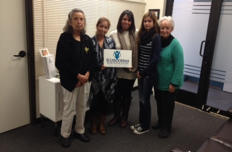

Module: Self-Advocacy
Cindy Mendelson, PhD, RN
Self-advocacy includes communicating your needs to others. An important part of effective communication is learning to ask for what you need without causing others to feel you are criticizing them. Practice using “I” statements. “I” statements allow you to ask for what you need without making others feel you are insulting them.
Consider the following:
“My fatigue has increased and the ulcers on my hands are not healing. I need you to do the dishes and take care of the floors by doing the vacuuming and mopping.”
Versus
“You are not helping me enough, and now I am tired and my ulcers are not healing.”
Seek information
One of the most important parts of being your own advocate is to learn as much as possible about scleroderma and about how your scleroderma affects you. Use many different sources of information to get different viewpoints. You can learn about your illness from:
- Your health care providers
- Information from the Scleroderma Foundation, Michigan Chapter of the Scleroderma Foundation, and the Scleroderma Research Foundation
- Books
- Reliable websites
- Support groups
-
Participating in support groups or activities sponsored by chapters of the Scleroderma Foundation provides information about scleroderma, and strategies to manage symptoms. Through participating in these activities, you can also learn self-advocacy strategies, increase public awareness about scleroderma, and help raise money for research and education.
The Scleroderma Foundation has a list of state chapters and support groups at
http://www.scleroderma.org/site/PageServer?pagename=chapter_locator#.VbpsG1LbKos
One of the purposes of this program is to help you learn about your illness, which will help you to become a better self-advocate. It is through self-education that you become aware of how the disease advances, how it affects you individually, what studies are being done to learn more about the disease, what different kinds of treatments there are, and your legal rights as a consumer of health care and as a person with a disabling illness.
Create solutions
Creating solutions is an important part of self-advocacy. While you should ask others to help you create solutions, it is important to stay focused on your needs. And an important part of creating solutions is doing the things necessary to take care of yourself and following through with a plan. Examples of creating solutions are listed under “Developing the plan.”